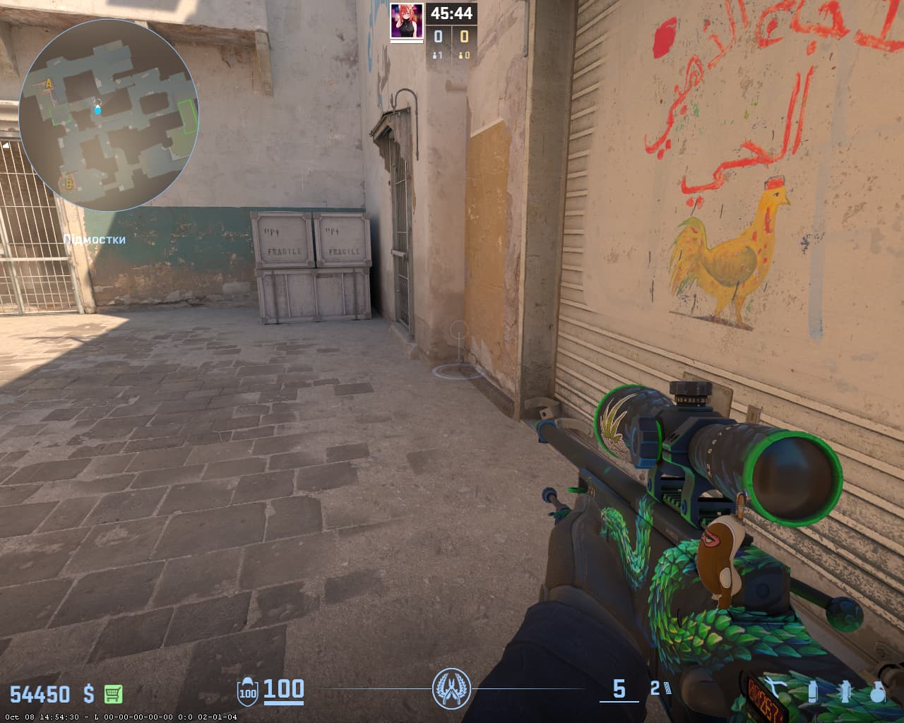
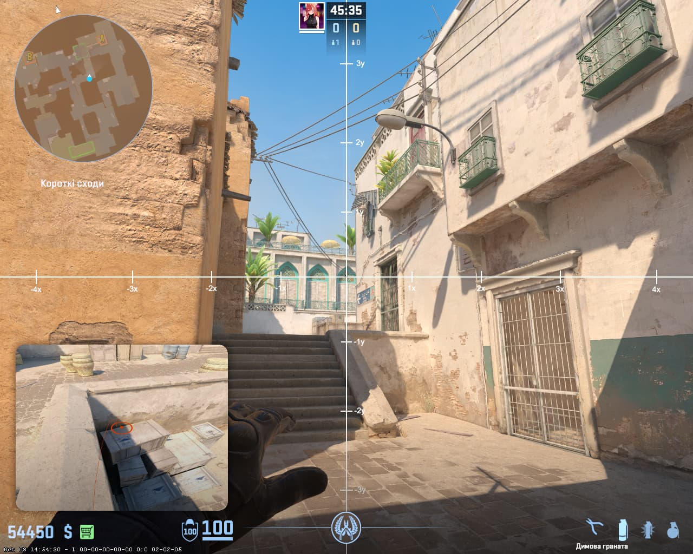
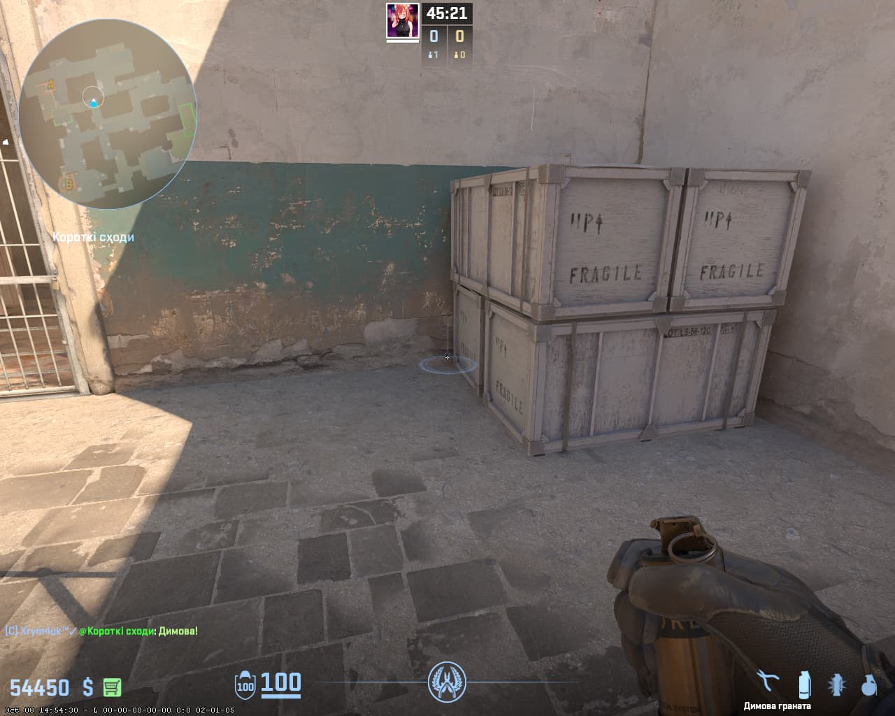
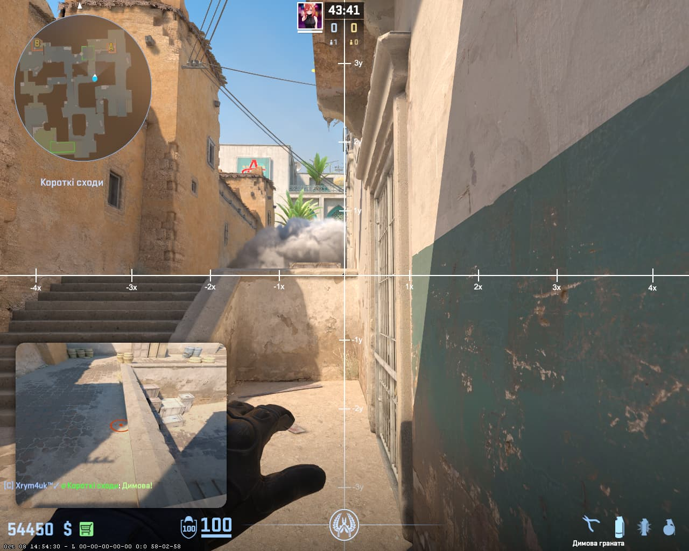
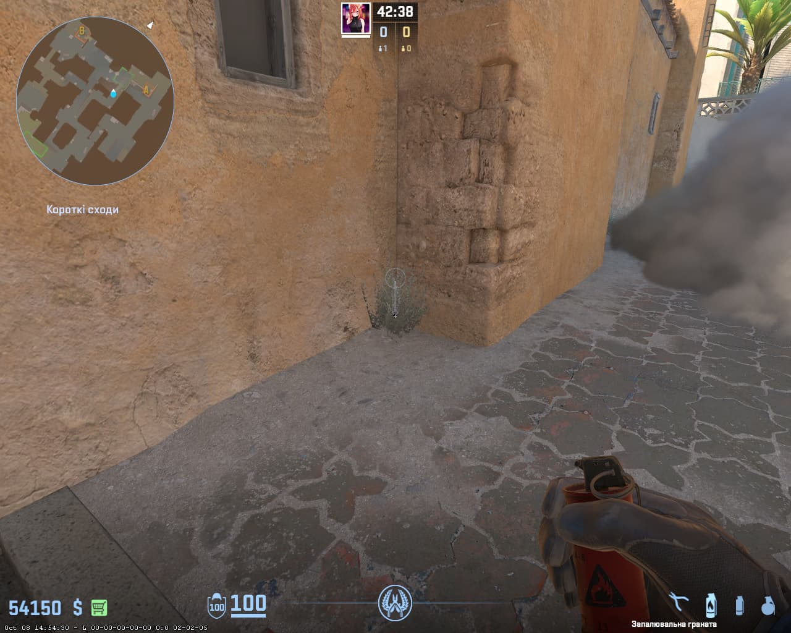
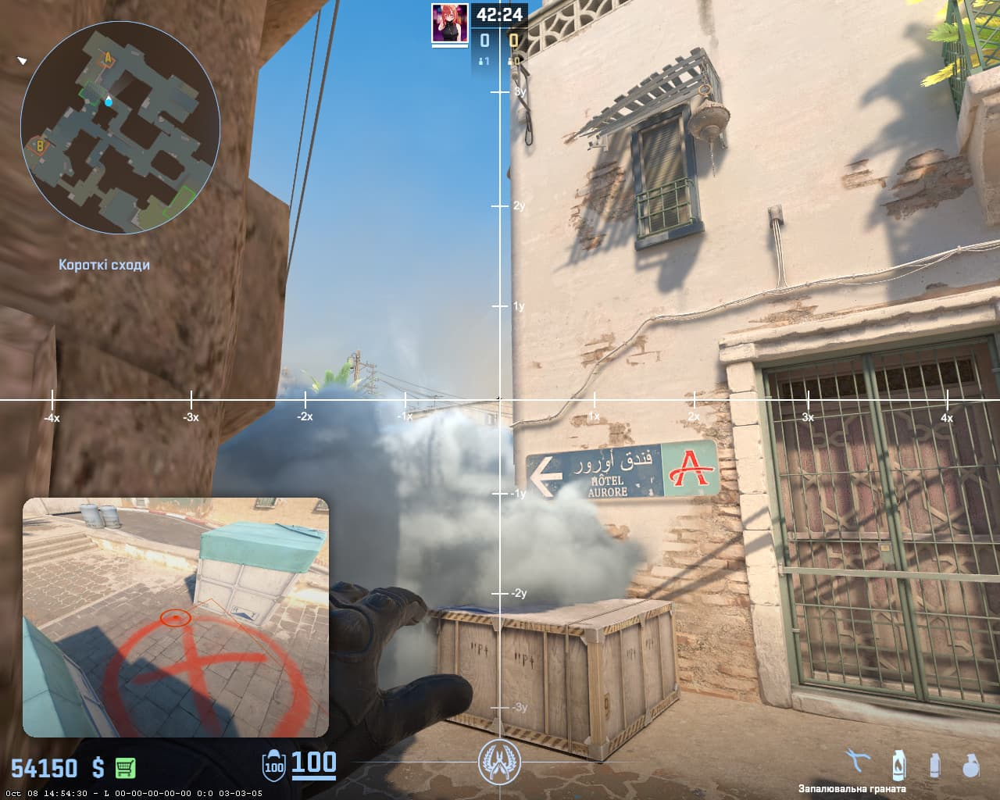

📍 Порада для телефонів: Щоб бачити сторінку точно так само, як на комп'ютері, відкрий меню браузера (3 крапки) та постав галочку «Версія для комп'ютера».
🎯 Тактика виходу: Весь цей розкид може виконувати одна людина. Спочатку дається стіна з двох смоків, після чого летить молотов і хаєшка для вибивання суперника.
🌫️ ЕТАП 1: ДОРОЖКА ЗІ СМОКІВ
🌫️ СТІНА ЗІ СМОКІВ НА SHORT
👤 ВИКОНУЄ ОДИН ГРАВЕЦЬ
1️⃣ ПЕРШИЙ СМОК:
📍 СТАВАЙ ТУТ

🎯 ЦІЛЬСЯ ТУТ

2️⃣ ДРУГИЙ СМОК:
📍 СТАВАЙ ТУТ

🎯 ЦІЛЬСЯ ТУТ

💥 ВПАДЕ ТУТ (ПОДВІЙНИЙ СМОК ПЕРЕКРИВАЄ ШОРТ)

⚡ КИДОК: ЛКМ (З МІСЦЯ)
🔥 ЕТАП 2: ЗАЧИСТКА ПЛЕНТА (МОЛОТОВ + ГРАНАТА)
🔥 МОЛОТОВ + 💣 ГРАНАТА В САЙТ
📍 СТАВАЙ ТУТ

🎯 ЦІЛЬСЯ ТУТ

⚠️ Як кидати: Спочатку кидається Молотов, і одразу слідом — Граната. Шкода від гранати сильно сповільнює суперника, не даючи йому швидко втекти з полум'я. Приціл однаковий!
⚡ КИДОК: JUMPTHROW + ЛКМ